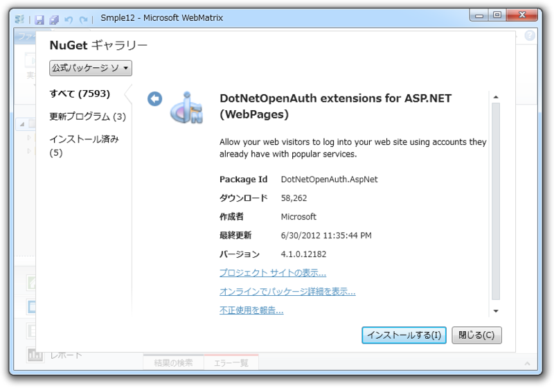
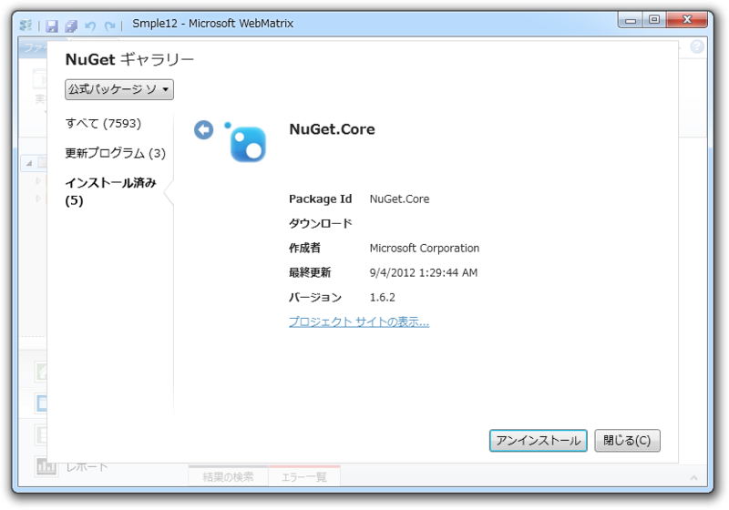
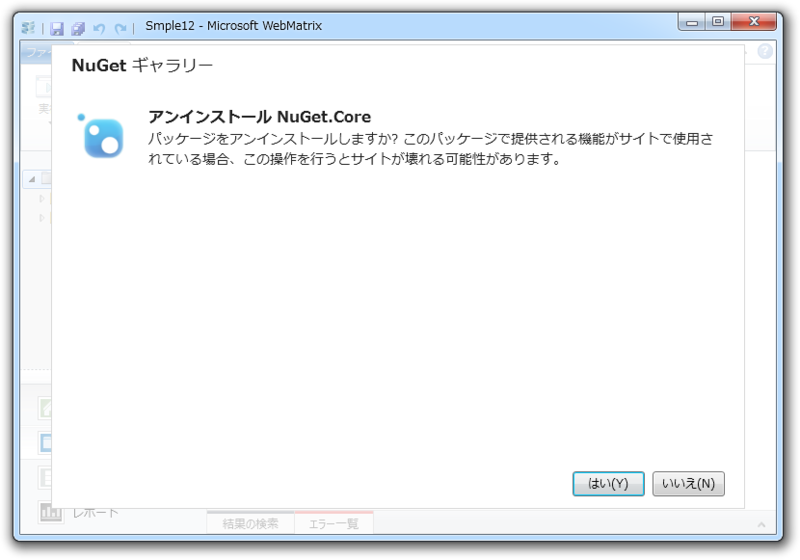
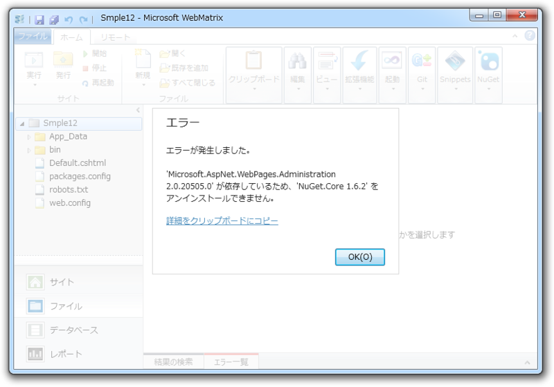
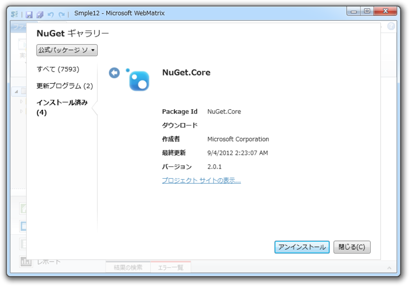
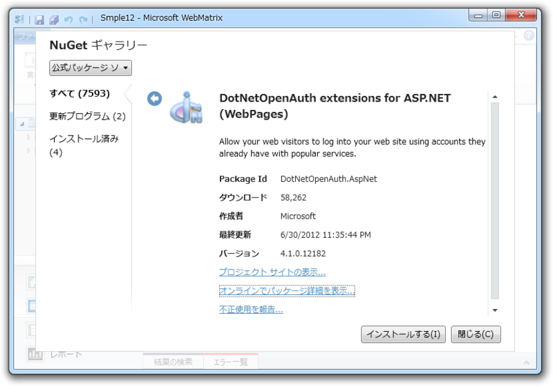
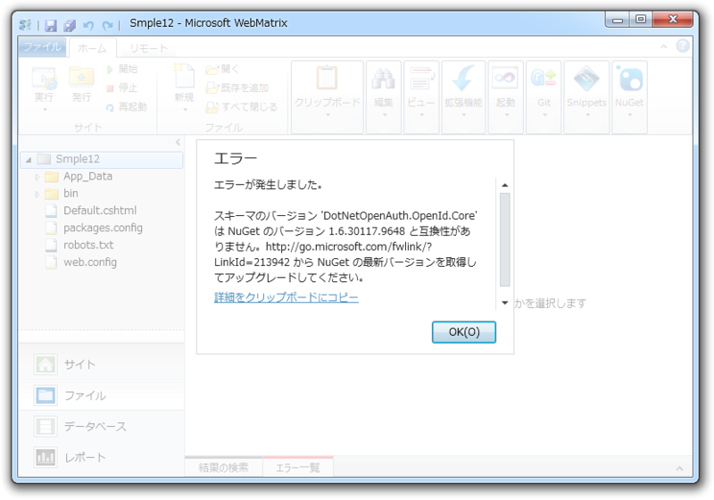

さて、WebMatrix で OAuth 認証を……Σ(ﾟдﾟlll)ｶﾞｰﾝ
公開日：
WebMatrix 2 では Twitter や Facebook など、外部サービスの OAuth 認証を使ってログインできるサイトも簡単に作れるらしい。というわけで試すことにした。
いつもどおり Empty Site テンプレートから Webサイトを作成。ついで DotNetOpenAuth extension for ASP.NET (WebPages) を NuGet でインストール。

ガッデム！／(^o^)＼ NuGet が古いらしいぞ。

確かに Empty Site テンプレートに含まれるのは 1.6.2 と相当古い。とっくに 2.0 も出てるのにな。しかし、なんで［更新プログラム］のところに出てこないのだろう。自動でアップデートできないじゃないか。一度アンインストールして、再度インストールしてみるかな。

NuGet Gallery | Microsoft ASP.NET Web Pages 2 Administration 2.0.20713.0Dependencies
- Microsoft.AspNet.WebPages (≥ 2.0.20710.0 && < 2.1)
- NuGet.Core (≥ 1.6.2 && < 1.7)
ジーザス！／(^o^)＼ これが依存性地獄か！
うまくいっているときには気にならないが、こういう状況になると WebMatrix に搭載されている NuGet クライアントは非常に非力かつ情報不足に感じられて、使うのが辛くなる。
とりあえず、このパッケージが何をしているのかは知らんが、ぶっこ抜くことにした。なに、困ったら初めからやり直せば良い ( ｰ`дｰ´)ｷﾘｯ ＜失うものなどなにもないんだ！

ウェルダン！＼(^o^)／ これで NuGet.Core のバージョンが 2.0.1 になった。これでもう一度インストールを……

ゴッドイズデス！／(^o^)＼ NuGet.Core は関係なかったのか？ Visual Studio の Nuget は最新版なのだけどなぁ。どこかに古いのが残っていて、それを参照しているのかな。面倒くさいことになった。
まぁ、続きは WebMatrix 2 の正式版まちってことで。ちなみに、今すぐ OAuth を試したい子は Starter Site テンプレートを使うといい。古いバージョンが完璧にセットアップ済みなので、とりあえず試すことができるゾ。